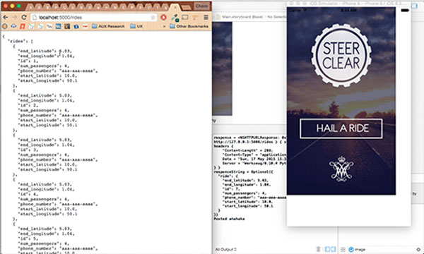
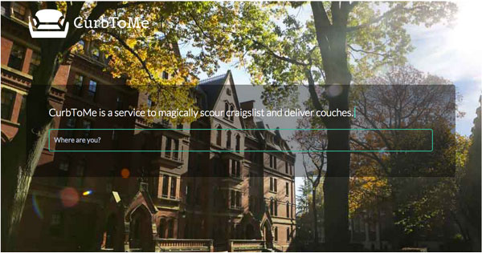
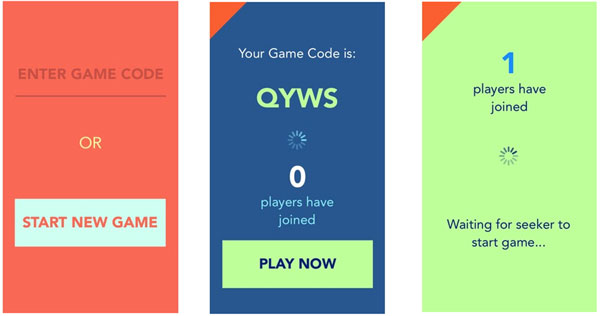
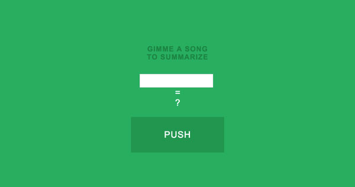

Projects
Steer Clear
(under development)
Steer Clear is a safe-ride program that provides a reliable, secure and free means of travel for students on weekend nights. Currently serving over 3000 students, the service requires the student to place a call to their operator. The Steer Clear App will replace the phone service by providing an IOS and Android cell phone app by which users will be able to request a ride. The driver and co-pilot will be able to view the queue via their cell phone as well. The queue features a dynamic algorithm that picks up students in an efficient manner. Not only will the app simplify the request process, it will also provide analytics for administrative purposes.
Toolbox: IOS | HTML/CSS/Javascript | Python with Flask | Google Maps API

CurbToMe
College students love free stuff. Now imagine if you could have free stuff delivered to you for a nominal fee. So free stuff + delivery...count me in! CurbToMe webscrapes the free section of Craigslist in your area and connects you with a courier who will pick-up and deliver the item. This project was developed at Dominion Enterprises Hackathon.
Toolbox: HTML/CSS/Javascript | Python with Flask | RSS Feed Scraper | PostMates API | Google Maps API

goSeek
Have you ever wanted to play Hide and Go Seek anywhere? Well now you can! With our goSeek app, you can create or join your friend's lobby. To help find your friends, we implemented a Marco Polo ping. When you press the Marco button, a chirp will play on your friend's phone. Have fun!
Toolbox: IOS | Python with Flask

Sum this to Me
What was the jist of the song? Sum this to Me webscrapes a song's lyrics and returns a one sentance summary jist of the song. Caution: Summary will not reveal a song's deeper meaning!
Toolbox: HTML/CSS/Javascript | Python Flask | PhantomJS | Selenium
The only people for me are the mad ones, the ones who are mad to live, mad to talk, mad to be saved, desirous of everything at the same time, the ones who never yawn or say a commonplace thing, but burn, burn, burn like fabulous yellow roman candles exploding like spiders across the stars.
The only people for me are the mad ones, the ones who are mad to live, mad to talk, mad to be saved, desirous of everything at the same time, the ones who never yawn or say a commonplace thing, but burn, burn, burn like fabulous yellow roman candles exploding like spiders across the stars.